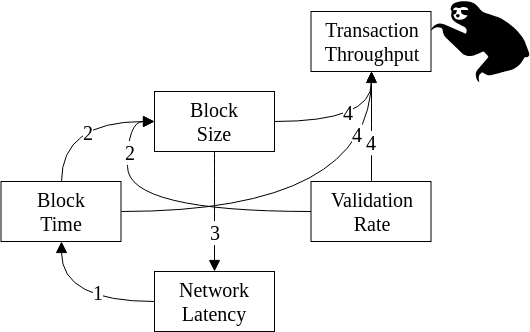

Thanks to Neil Veira and John Adler who talked this through with me.
Everybody has heard this statistic a million times: "Visa can handle twelve quadrillion transactions per second but Bitcoin only pushes one through during a full moon" (direct quote from Queen Elizabeth II herself).
Right now blockchain sucks. Transactions are too slow and too expensive, and there's no two ways about it.

Block Time: The (expected) amount of real time it takes to mine a new block. In Bitcoin and Ethereum (which use Proof-of-Work) the network dynamically controls a difficulty parameter to keep expected block times at 10 minutes and 12 seconds respectively. In a Proof-of-Stake system, the block time could be a lot easier to accurately control, but there would be issues involving synchronizing clocks.
Block Size: I'm being deliberately vague here. Block size is a metric for "how much stuff" is in a block. In Bitcoin, you could say that it is the number of transactions. In Ethereum, you could say it is the total gas. The problem with just using a size in bytes is that it isn't representative of the amount of work that block performs. Just a few bytes in Ethereum could be EVM code for a loop with a million iterations.
Validation Rate: This is the number of transactions which can be validated per unit time. I'm not sure if this is wholly meaningful for Ethereum, where "total gas value of transactions per unit time" may be a better metric. Anyway, this is a qualitaative discussion so try not to get mired in the details.
Network Latency: I'm not sure exactly what quantity this should represent. You could say it's the average time to send 1 kB to a peer on the network, or you could say it's the average time for 1 kB to reach all peers on the network. I'll come back and fix up this definition when I have a better idea myself.
Transaction Throughput: The holy grail, that most coveted of all achievements. The average Transactions per Second (TpS) your blockchain is capable of pushing through. Once again, TpS may not be a meaningful metric for all blockchain platforms. Ethereum's speed may be better characterized by how many computations per second it is pushing through (which is measured in units of gas/second).
Relationships:
Most (if not all) PoW blockchains just choose a block time and the network dynamically updates its difficulty in order to maintain it. We will assume this model for the rest of the discussion.
To the best of my understanding, in a Proof-of-Work blockchain the block times are governed by an exponential distribution. To rigorously justify this is tricky (especially for me, since I'm very unsure when it comes to stats) but I'll have to come back to this another time anyway.
So let's start with the PDF and CDF of an exponential distribution, with Bitcoin's mean of 10 minutes: